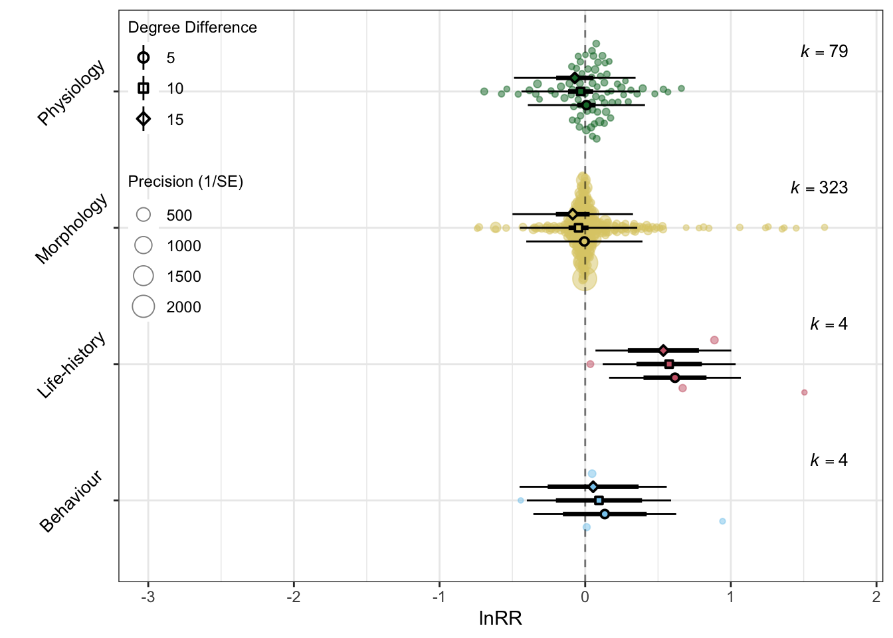
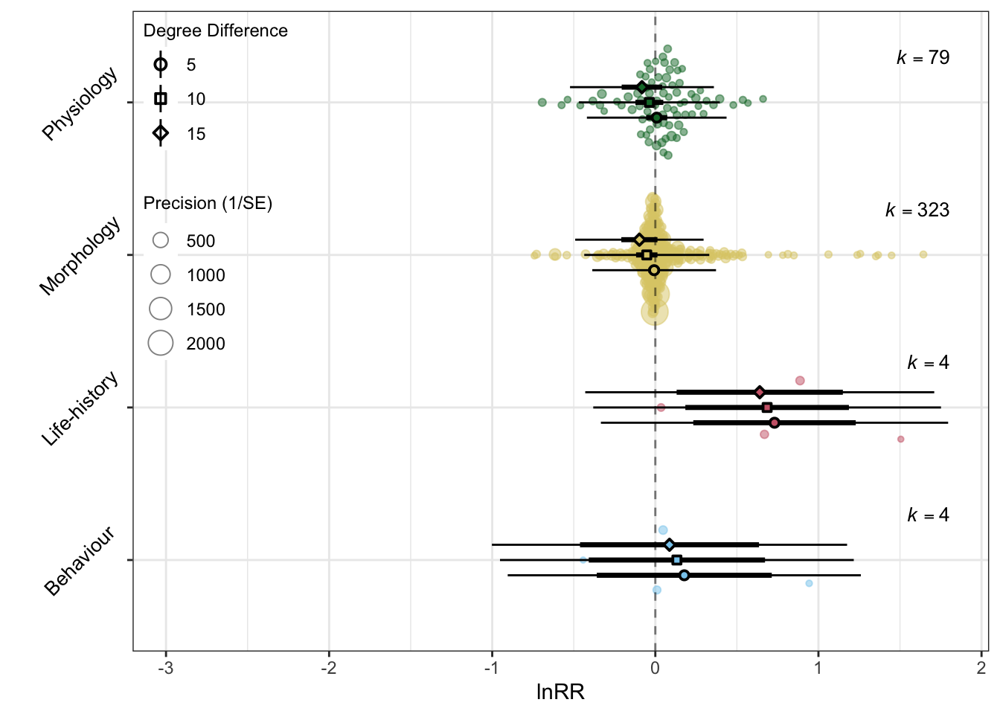

orchaRd 2.0 Tutorial: ESMARConf2023
1 How to Download and Install Orchard (vers. 2.0)
Details on the original orchaRd (vers. 1.0) can be found in Nakagawa et al. (2021). Orchard 2.0 functionality is described in Nakagawa et al. (2023), but is not yet on CRAN. You can download the package by visiting our GitHub page.
If you don’t already have the pacman package remember to unannotate code line 3
We also have a detailed vignette which will show much of it’s functionality.
2 Orchard and Bubble Plots
2.1 Lets load a dataset
We’ll use a very simple meta-analysis dataset that is attached to orchaRd to demonstrate how you can make orchard plots and bubble plots from meta-regression models. The data come from Lim, Senior, and Nakagawa (2014). This is a meta-analysis comparing correlation coefficients (rather Fisher’s Z Transformed Correlation), and is useful as it demonstrates a number of orchard plot functions
Code
Multivariate Meta-Analysis Model (k = 357; method: REML)
logLik Deviance AIC BIC AICc
-97.6524 195.3049 213.3049 248.0263 213.8343
Variance Components:
estim sqrt nlvls fixed factor
sigma^2.1 0.0411 0.2029 220 no Article
sigma^2.2 0.0309 0.1757 357 no Datapoint
Test for Residual Heterogeneity:
QE(df = 350) = 1912.9637, p-val < .0001
Test of Moderators (coefficients 1:7):
QM(df = 7) = 356.6775, p-val < .0001
Model Results:
estimate se zval pval ci.lb ci.ub
PhylumArthropoda 0.2690 0.0509 5.2829 <.0001 0.1692 0.3687 ***
PhylumChordata 0.3908 0.0224 17.4190 <.0001 0.3468 0.4347 ***
PhylumEchinodermata 0.8582 0.3902 2.1992 0.0279 0.0934 1.6230 *
PhylumMollusca 0.4867 0.1275 3.8175 0.0001 0.2368 0.7366 ***
PhylumNematoda 0.4477 0.3054 1.4658 0.1427 -0.1509 1.0463
PhylumPlatyhelminthes 0.4935 0.2745 1.7980 0.0722 -0.0444 1.0314 .
PhylumRotifera 0.4722 0.3021 1.5634 0.1180 -0.1198 1.0642
---
Signif. codes: 0 '***' 0.001 '**' 0.01 '*' 0.05 '.' 0.1 ' ' 1Here, we have fit a multi-level meta-regression model, with two random effects (Article / Study) and a within study variance. You will notice that we have a Phylum moderator as we are intersted in estimating the meta-analytic mean within each major phyla (Figure 1).
2.2 Orchard Plots
Using this model and data lets demonstrate how to make orchard plots. This can be done with the orchard_plot function.
If you’re not sure what arguments orchard_plot takes you can explore the vigette or ask for help using ?orchard_plot
orchard_plot takes a few essential arguments:
| Argument | Description |
|---|---|
| model | The metafor model object (e.g., rma.mv) |
| mod | The moderator of interest (as a character). If you don't specify it will default to the overall meta-analytic mean |
| data | The dataset used to fit the model |
| group | The group you wish to tally N for within brackets |
| xlab | The axis label for the effect size |
Code
orchaRd::orchard_plot(lim_MR, mod = "Phylum", group = "Article", data = lim, xlab = "Correlation coefficient", alpha = 0.5, transfm = "tanh", angle = 45, N = "N", cb = FALSE)
2.3 Subsetting levels in orchard plots
Figure 1 looks pretty bad. There’s very little data in most phyla. So, lets change this by restricting the plotting to only taxa with sufficient data. We can do this using the at argument along with subset = TRUE to limit the prediction to only three phyla.
Here we’ll demonstrate a two step approach which can also provide a table of the meta-analytic means which can be used in publications
Code
# Use mod_results to first create a table. It takes the same arguments as orchard_plot()
lim_MR_results <- orchaRd::mod_results(lim_MR, mod = "Phylum", group = "Article",
data = lim, at = list(Phylum = c("Chordata", "Arthropoda", "Mollusca")), subset = TRUE)
# Now, we can feed in the mod_results() table directly to orchaRd
orchaRd::orchard_plot(lim_MR_results, data = lim, xlab = "Correlation coefficient",
transfm = "tanh", g = TRUE, angle = 45)
Ok, this is more useful, but lets also make a nice table with the mod_results to report in our meta-analysis, which we can see in Table 2.
Code
gt(lim_MR_results$mod_table)| name | estimate | lowerCL | upperCL | lowerPR | upperPR |
|---|---|---|---|---|---|
| Chordata | 0.391 | 0.347 | 0.435 | -0.1370 | 0.919 |
| Arthropoda | 0.269 | 0.169 | 0.369 | -0.2664 | 0.804 |
| Mollusca | 0.487 | 0.237 | 0.737 | -0.0956 | 1.069 |
2.4 Bubble plots
We often have moderators that are continuous in meta-analyis, particularly when considering things like publication bias. Here, bubble_plots can be extremely useful (Figure 3).
Code
# We'll add publication year in to the data and calculate the sampling variance
lim[, "year"] <- as.numeric(lim$year)
lim$vi <- 1/(lim$N - 3)
# Now, lets fit a meta-regerssion model that has an interaction between year and environment type.
model_lim2 <- metafor::rma.mv(yi = yi, V = vi,
mods = ~Environment * year,
random = list(~1 | Article,
~1 | Datapoint),
data = na.omit(lim))
# Just like orchard_plots we just now put the model in
orchaRd::bubble_plot(model_lim2, mod = "year", group = "Article", data = na.omit(lim), by = "Environment", xlab = "Year",legend.pos = "top.left")
3 Orchard plots with marginalised means
One of the main limitations of orchaRd (vers. 1.0) was that it was only capable of handling meta-regerssion models with a single moderator. The use of the emmeans package circumvents that limitation because a full model can be fit and mean effect size predicited in levels of a single moderator marginalising (effectvely averaging) over levels of a second (or even third).
To demonstrate how this works, we’ll turn to a new meta-analysis by O’Dea et al. (2019).
Code
# Load the dataset that comes with orchaRd
data(fish)
# We'll now fit the 'multimoderator' meta-regression model
model_odea <- metafor::rma.mv(yi = lnrr, V = lnrr_vi,
mods = ~experimental_design + trait.type + deg_dif + treat_end_days, method = "REML", test = "t",
random = list(~1 | group_ID,
~1 | es_ID),
data = fish,
control = list(optimizer = "optim", optmethod = "Nelder-Mead"))
model_odea
Multivariate Meta-Analysis Model (k = 410; method: REML)
Variance Components:
estim sqrt nlvls fixed factor
sigma^2.1 0.0153 0.1236 84 no group_ID
sigma^2.2 0.0256 0.1599 410 no es_ID
Test for Residual Heterogeneity:
QE(df = 402) = 38537.0410, p-val < .0001
Test of Moderators (coefficients 2:8):
F(df1 = 7, df2 = 402) = 5.8773, p-val < .0001
Model Results:
estimate se tval df
intrcpt 0.1136 0.1456 0.7805 402
experimental_designsplit pooled families 0.0347 0.0525 0.6608 402
experimental_designsplit single family 0.0655 0.0713 0.9194 402
trait.typelife-history 0.4821 0.1824 2.6422 402
trait.typemorphology -0.1402 0.1458 -0.9612 402
trait.typephysiology -0.1260 0.1492 -0.8450 402
deg_dif -0.0080 0.0053 -1.5078 402
treat_end_days 0.0007 0.0003 2.2373 402
pval ci.lb ci.ub
intrcpt 0.4356 -0.1726 0.3999
experimental_designsplit pooled families 0.5091 -0.0686 0.1380
experimental_designsplit single family 0.3585 -0.0746 0.2057
trait.typelife-history 0.0086 0.1234 0.8408 **
trait.typemorphology 0.3370 -0.4268 0.1465
trait.typephysiology 0.3986 -0.4193 0.1672
deg_dif 0.1324 -0.0184 0.0024
treat_end_days 0.0258 0.0001 0.0014 *
---
Signif. codes: 0 '***' 0.001 '**' 0.01 '*' 0.05 '.' 0.1 ' ' 1You’ll notice here that we have fit a number of moderators including the type of trait (trait.type) and experimental design (experimental_design), and we have controlled for the temperature difference between treatments (deg_diff) and how long treatments were applied (treat_end_days). Obviously, you’ll want to be sure you have enough data to fit such a model, but for demonstration purposes, this will do.
We can now make an orchard_plot, but how do we do this given there are so many variables? The key arguments you’ll want to know are at, and by arguments, which allows us to control at what levels we want to marginalise the means to. Here, we want to know teh meta-analytic mean for the different trait categories, but how it changes with larger temperature differences (deg_days). It will then predict these means marginalising across all the other moderators in the model.
Code
orchaRd::orchard_plot(model_odea, group = "group_ID", mod = "trait.type", at = list(deg_dif = c(5, 10, 15)), by = "deg_dif", xlab = "lnRR", data = fish, angle = 45, g = FALSE, legend.pos = "top.left", condition.lab = "Degree Difference") + theme(legend.direction = "vertical")
orchaRd uses ggplot2 for plotting. As such, you can modify plots by adding layers, such as theme() to adjust the look of plots.
4 Orchard plots from models with heterogeneous variance
A key assumption of many meta-analytic models is homogeneity of variance. metafor is capcable of releaxing this assumption and it can be extremely improtant for inferential tests. orchard can handle models with heterogenous variance across groups.
Let’s expand the model we covered in Section 3 to now relax the assumption of heterogeneous variance in our trait categories.
Code
model_het <- metafor::rma.mv(yi = lnrr, V = lnrr_vi,
mods = ~experimental_design + trait.type + deg_dif + treat_end_days, method = "REML", test = "t",
random = list(~1 | group_ID,
~1 + trait.type | es_ID),
rho = 0, struc = "HCS", data = fish, control = list(optimizer = "optim", optmethod = "Nelder-Mead"))
orchaRd::orchard_plot(model_het, group = "group_ID", mod = "trait.type", at = list(deg_dif = c(5, 10, 15)), by = "deg_dif", xlab = "lnRR", data = fish, angle = 45, g = FALSE, legend.pos = "top.left", condition.lab = "Degree Difference") + theme(legend.direction = "vertical")
Code
tbl_odea <- orchaRd::mod_results(model_het, group = "group_ID", mod = "trait.type", at = list(deg_dif = c(5, 10, 15)), by = "deg_dif", weights = "prop", data = fish)
gt(tbl_odea$mod_table)| name | condition | estimate | lowerCL | upperCL | lowerPR | upperPR |
|---|---|---|---|---|---|---|
| Behaviour | 5 | 0.17752 | -0.3589 | 0.7139 | -0.905 | 1.260 |
| Life-history | 5 | 0.73075 | 0.2327 | 1.2288 | -0.334 | 1.795 |
| Morphology | 5 | -0.00716 | -0.0424 | 0.0281 | -0.386 | 0.372 |
| Physiology | 5 | 0.00862 | -0.0559 | 0.0731 | -0.419 | 0.437 |
| Behaviour | 10 | 0.13223 | -0.4081 | 0.6726 | -0.952 | 1.217 |
| Life-history | 10 | 0.68547 | 0.1841 | 1.1869 | -0.381 | 1.751 |
| Morphology | 10 | -0.05245 | -0.1179 | 0.0130 | -0.436 | 0.331 |
| Physiology | 10 | -0.03667 | -0.1223 | 0.0490 | -0.468 | 0.395 |
| Behaviour | 15 | 0.08694 | -0.4618 | 0.6357 | -1.002 | 1.176 |
| Life-history | 15 | 0.64018 | 0.1306 | 1.1497 | -0.430 | 1.710 |
| Morphology | 15 | -0.09774 | -0.2086 | 0.0131 | -0.491 | 0.296 |
| Physiology | 15 | -0.08196 | -0.2063 | 0.0424 | -0.523 | 0.359 |
We can now see that the residual variability in each of the 4 trait categories is no longer assumed to be the same.
5 Additional Functions
orchaRd 2.0 also has additional functions that are quite useful in meta-analysis, which are detailed in Table 4.
| Function | Description |
|---|---|
i2_ml() |
Calculates various \(I^2\) metrics (depending on how many random effects are in the model) for multi-level meta-analysis, including \(I^2_{total}\), which is the proportion of total variance in effects excluding sampling variance |
r2_ml() |
Calculate \(R^2\) for the model. Both marginal and conditional \(R^2\) are provided. See Nakagawa and Schielzeth (2013). |
submerge() |
Merges two mod_results tables together. Useful for creating orchard plots where the overall meta-analytic mean is presented below meta-regression models. |